S38#
Avtor: Tjaša Lešnik
Datum izdelave: 24. 5. 2024
Koda seminarja: S38
Vhodni podatek#
Povezava do datoteke z vhodnim podatkom: S38
Rezultati analiz#
Ime in izvorni organizem proteina#
Ime: Glikogen sintaza, adp-glukozna transkglukozilaza (angl. glycogen synthase, adp-glucose transglucosylase)
Izvorni organizem proteina: Desulfovibrio
Opis poti: Najprej sem v zbirki GenBank poiskala celotno zaporedje za plazmid pUC57 (GenBank ID: Y14837.1). Za poravnavo dodeljenega zaporedja in FASTA formata zaporedja pUC57 sem uporabila orodje za globalno poravnavo Needle (slika 1). Za del zaporedja, ki se s plazmidom pUC57 ni ujemal (slika 2) sem sklepala, da gre za dodeljen vključek in ga zato uporabila za iskanje v BLASTX in sicer po bazi metagenomic proteins(env_nr). Tako sem našla protein s 100 % ujemanjem (GenBank ID: KUG27688.1), kar pomeni, da sem našla protein, ki pripada dodeljenemu vključku (slika 3). Iz GenBank zapisa sem lahko tudi razbrala ime proteina in njegov izvorni organizem, ki pripada družini Desulfovibrio (slika 4, slika 5). Z aminokislinskim zaporedjem sem nato ponovno iskala po BLASTP po zbirki nr in našla zaporedje s 98.14 % ujemanjem in 100 % “query cover” (NCBI Reference Sequence: WP_163302191.1, UniProt ID: A0A7K3NPL7), iz organizma Desulfolutivibrio sulfodismutans (slika 6), s čimer sem še dodatno potrdila, da je protein najverjetneje zares iz omenjene družine.
Slike:
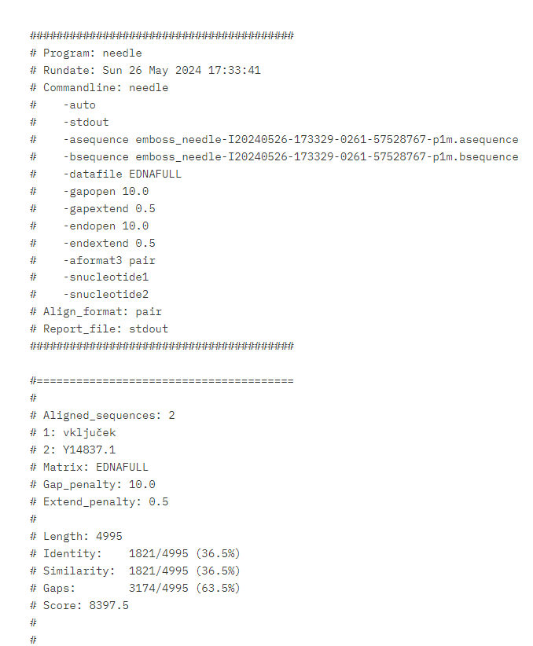
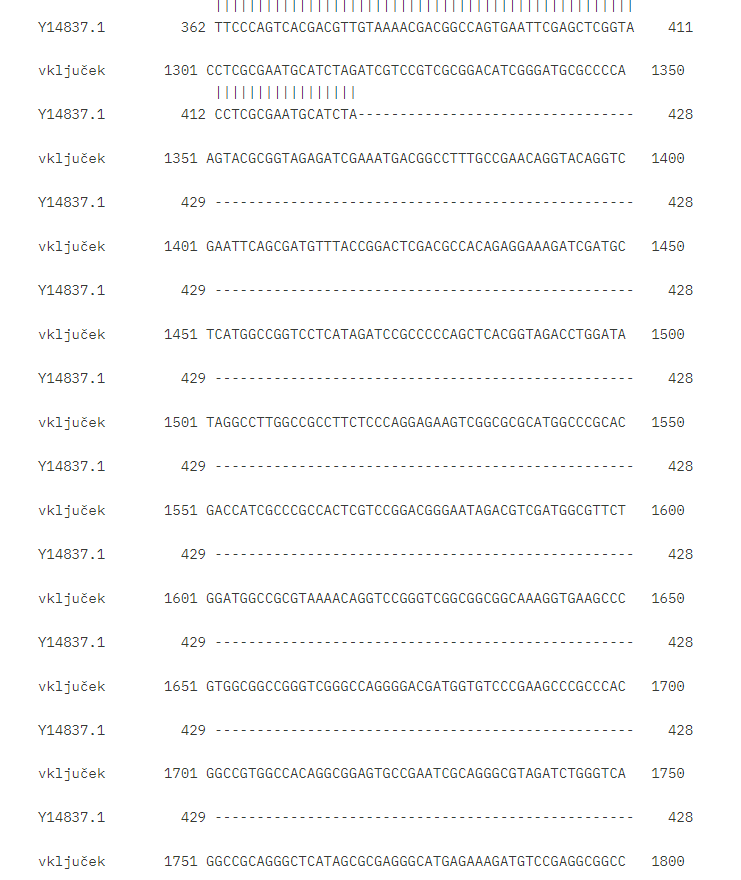
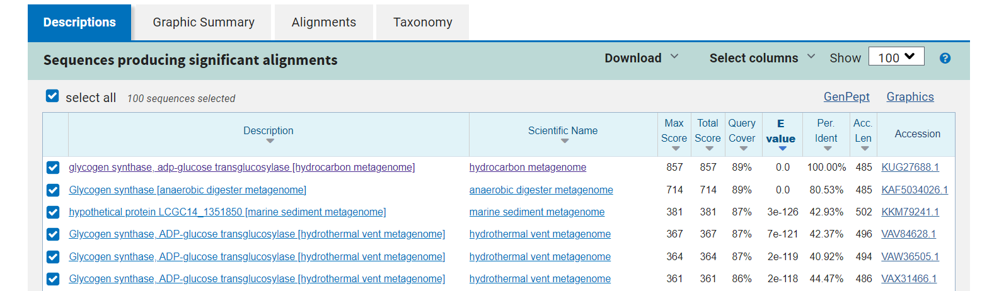
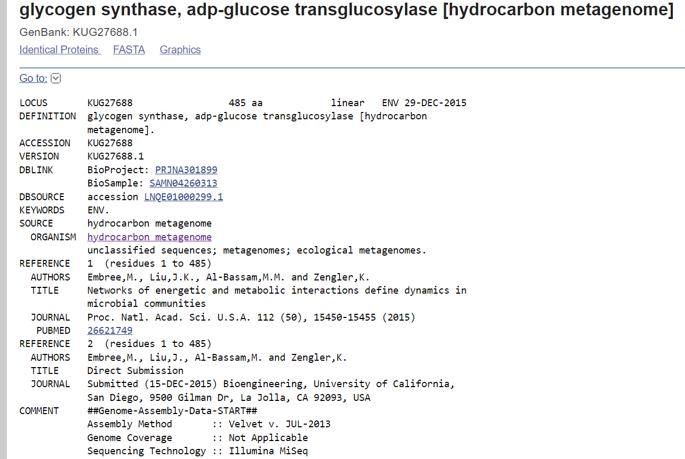
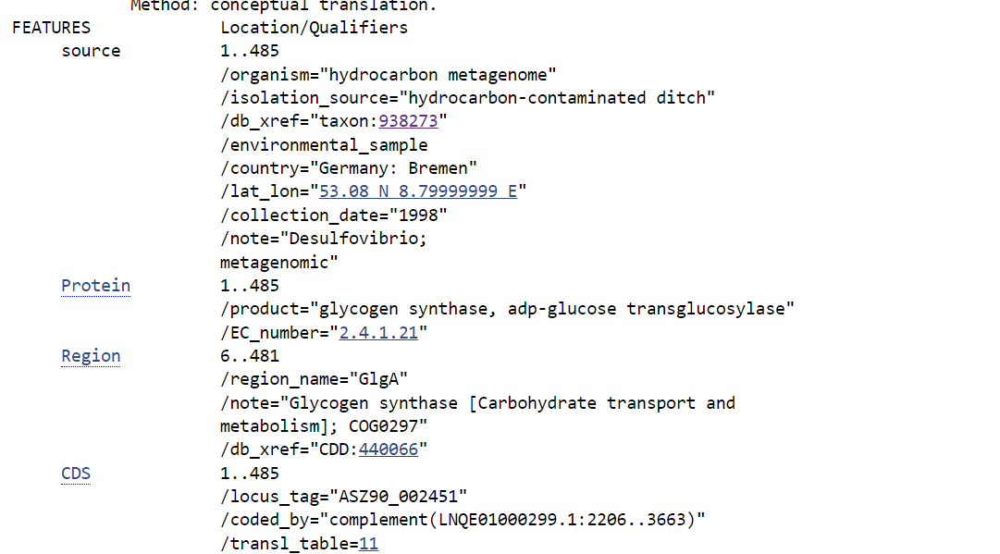

Lokalizacija in topologija#
Lokalizacija/topologija: kloroplasti / citosol (manj verjetno)
Opis poti: Ker z iskanjem s pomočjo osnovnega imena proteina po UniProtu nisem našla primernih informacij, sem informacije o lokalizaciji poskušala poiskati s pomočjo z zbirke UniProtKB/SwissProt v blastp in tako našla nekaj podobnih proteinov, ki so bili dostopni v zbirki UniProt (slika 7). Iz prvih štirih zadetkov, ki so imeli E-vrednost 0.0, Query cover 98 % in procent identičnosti od 66 do 63 % sem lahko razbrala le, da se protein najbrž nahaja v kloroplastih (slika 8), saj kategorije subcellular location niso imeli definirane. Nato sem pogledala še za peti zadetek, ki ima sicer že manj kot 43 % ujemanje in E-vrednost, ki ni več enaka 0.0. Protein tam naj bi se nahajal v citosolu (slika 9).
Slike: 7. 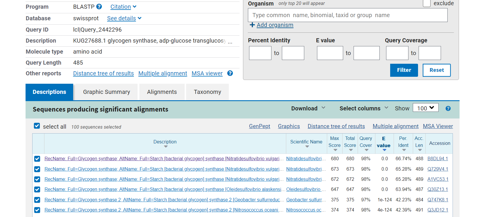 8. 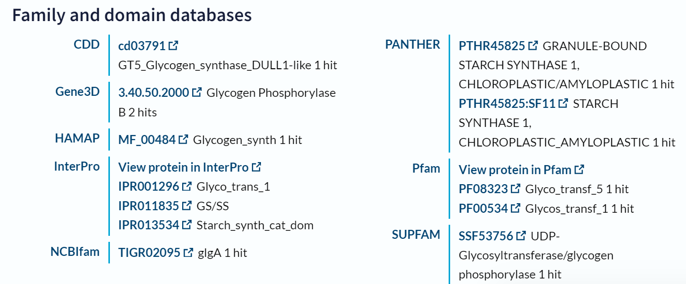 9. 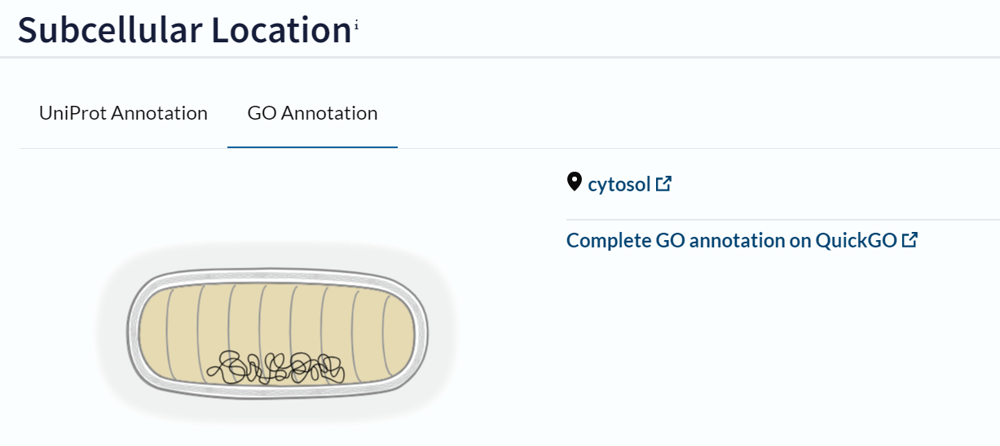
Velikost proteina#
Velikost: 485 aminokislinskih ostankov
Opis: Velikost lahko razberemo iz najdenih podatkov na GenBank (GenBank: KUG27688.1)(slika 10).
Slike: 10.
Domenska zgradba#
Domene: družina glikozil transferaz 1 in katalitična škrobna sintaza
Opis poti: Domene sem poiskala na najbolj podobnem vendar ne preverjenem zadetku iz UniProta - UniProt ID: A0A7K3NPL7. Tam je v kategoriji Family & Domains pojasnjeno, da naj bi bil protein sestavljen iz dveh domen in sicer katalitične škrobne sintaze (angl. Starch synthase catalytic) in družine glikozil transferaz 1 (angl. Glycosyl transferase family 1) (slika 11). Če preverimo še najbolj podobne zadetke blastp iz zbirke UniProtKB/SwissProt (npr. UniProt ID: Q729V4) pa piše, da je prav tako podobno družini glikozil transferaz 1 (slika 12).
Slike:
11. 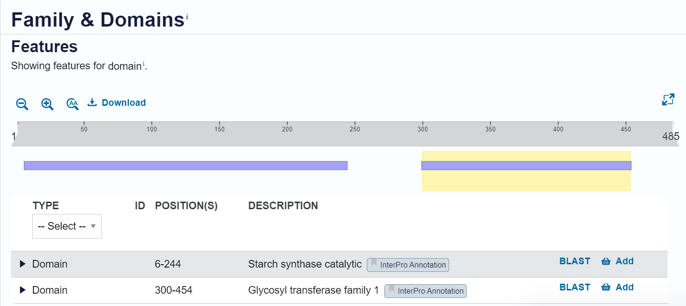
12. 
Post-translacijske modifikacije#
Post-translacijske modifikacije: /
Opis poti: Modifikacije sem iskala po UniProt-u za najbolj podobne najdene proteine in sicer sem podatke poskušala poiskati v kategoriji PTM/Processing. Kategorija za večino sploh ni bila definirana (sivo obarvano ime ‘PTM/Processing’ ob strani)(slika 13). Našla sem jo le pri proteinih z UniProt ID: Q729V4, A1VC53 in B8DL94, kjer pa je pisalo, da nastane veriga glikogen sintaze, kar ni zares modifikacija (slika 14).
Slike: 13. 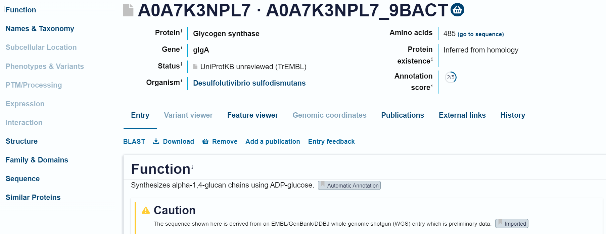 14. 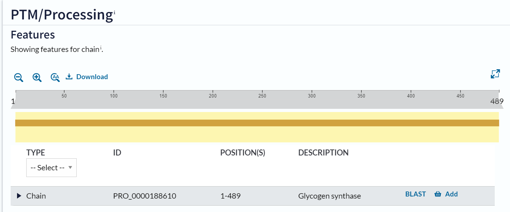
Funkcija proteina in substrat#
Funkcija proteina in substrat: sintetizira alfa-1,4-glukan verige z uporabo ADP-glukoze
Opis poti: Podatke o funkciji proteina sem poiskala iz primerljivih (že prej omenjenih) proteinov, kjer je funcija povsod enaka. Podatki o funkciji so dostopni na UniProtu pod zavihkov Function. Protein naj bi bil torej encim, njegov substrat pa je ADP-glukoza (slika 15, UniProt ID: B8DL94). O funkciji pa lahko sklepamo že tudi iz samega imena proteina (Glikogen sintaza, adp-glukozna transkglukozilaza).
Slika: 15.
Najbolj in najmanj ohranjene regije#
Najbolj ohranjene regije: mesta od P513 do V545
Najmanj ohranjene regije: tiste kjer črk sploh ni ali pa so zelo majhne (na prikazu iz WebLogota.)
Opis poti: Najprej sem s pomočjo osnovnega aminokislinskega zaporedja (GenBank ID: KUG27688.1) iskala po blastp, PSI-BLAST in naredila nekaj iteracij. Le te sem nato skušala poravnati v orodju Cobalt vendar pa se je stran vedno znova sesula, ko sem podatke skušala prenesti. Poravnavo sem nato želela izvesti tudi v orodju Omega cluster, vendar pa tukaj ni šlo spremeniti oblike podatkov ob prenosu datotete. Da sem dobila vsaj približen vpogled v ohranjenost regij, sem v Uniprotu poiskala 20 podobnih zaporedij proteina in jih ponovno poravnala s pomočjo orodja align v UniProtu (slika 16). Podatke sem prenesla v obliki FASTA v WebLogo, s katerim lahko iz velikosti črk, ki predstavljajo aminokislinske ostanke sklepamo o ohranjenosti le teh (slika 17, slika 18). Najbolj ohranjena so bila mesta od P513 do V545 kar se ujema z delom zaporedja domene iz družine glikozil transferaz 1.
Slike: 16. 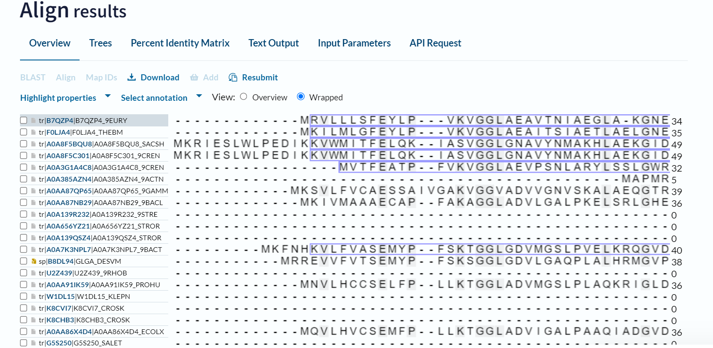 17. 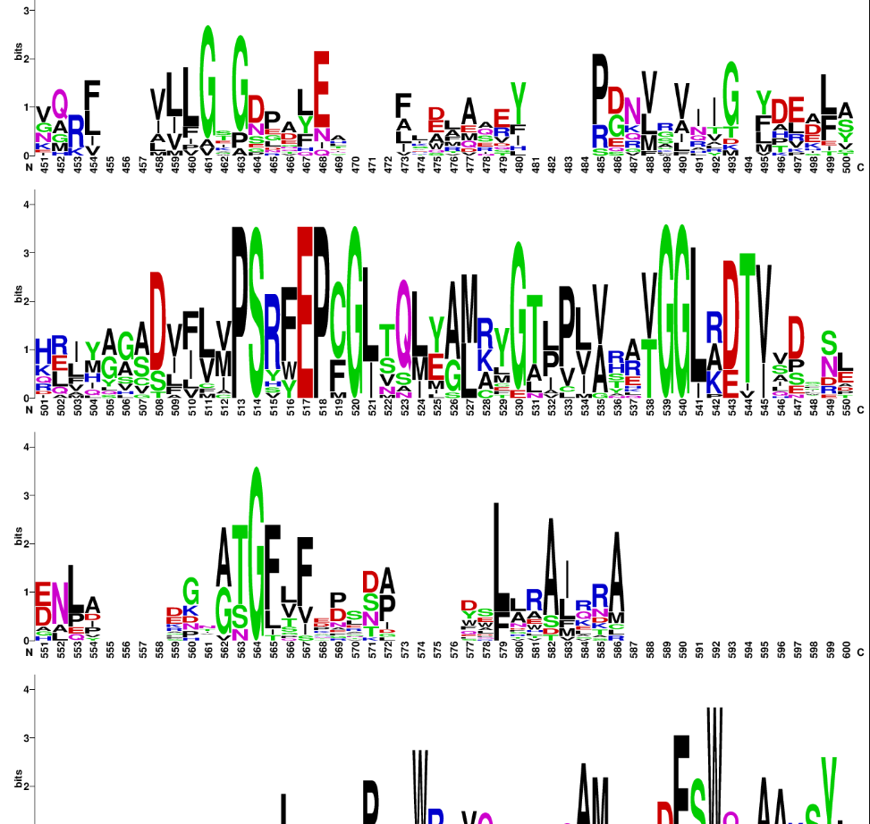 18. 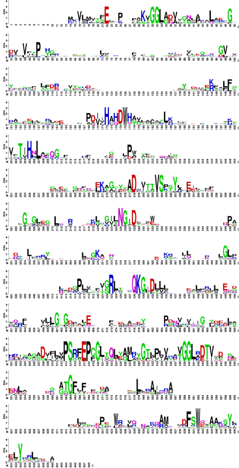
Podobni evkariontski proteini#
Organizem:Oryza sativa subsp. japonica (Riž)
Protein: Sintaza 1 za topen škrob (angl. Soluble starch synthase 1)
Funkcija: sodeluje pri sintezi škroba v amiloplastih; pomaga pri podaljševanju amilopektinske verige (slika 19).
Lokacija: amiloplasti ali kloroplasti
Opis poti: Podobne evkariontske proteine sem iskala s pomočjo blastp in sicer s kriterijem za organizem ‘Eukaryota (taxid:2759)’ in zbirko UniProtKB/SwissProt (slika 20). Našla sem precej zadetkov vendar so imeli kar slab procent podobnosti - okoli 33 % (slika 21). Kjub slabi podobnosti sem analizirala prvi zadetek z UniProt ID: Q0DEC8.
Slike: 19. 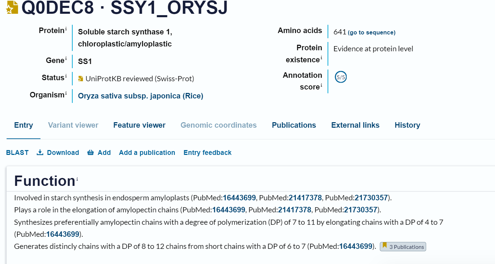 20. 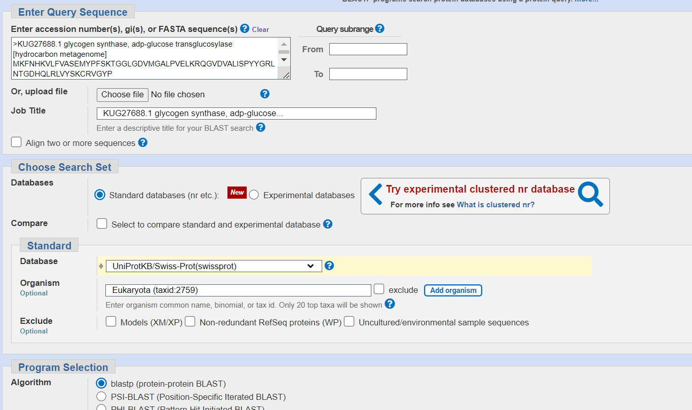 21. 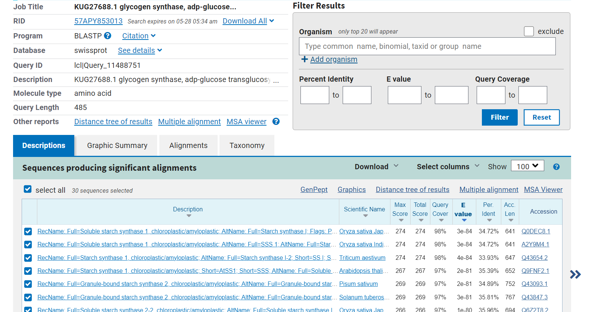
Potencialna funkcijska povezanost z drugimi proteini, morebitne medproteinske interakcije#
Potencilne funkcijske povezanosti z drugimi proteini z uporabo meni znanih orodij nisem uspela najti. Z iskanjem po internetu pa bi lahko rekla, da je sama glikogen sintaza vsaj pri človeku povezana z glikogeninom 1 in nebulinom (slika 22), vendar pa enako definitivno ne morem trditi za podan protein, ker za to nimam konkretnih ‘dokazov’.
Slika: 22. 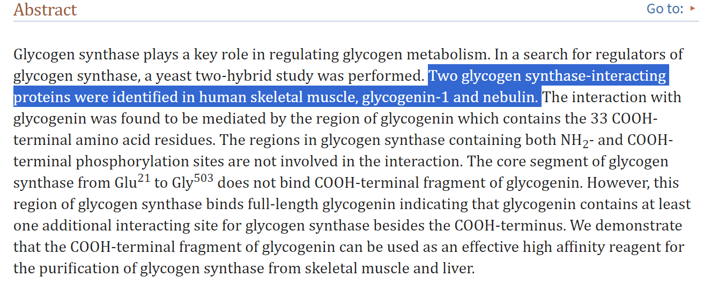
Struktura oz. model strukture#
Struktura: 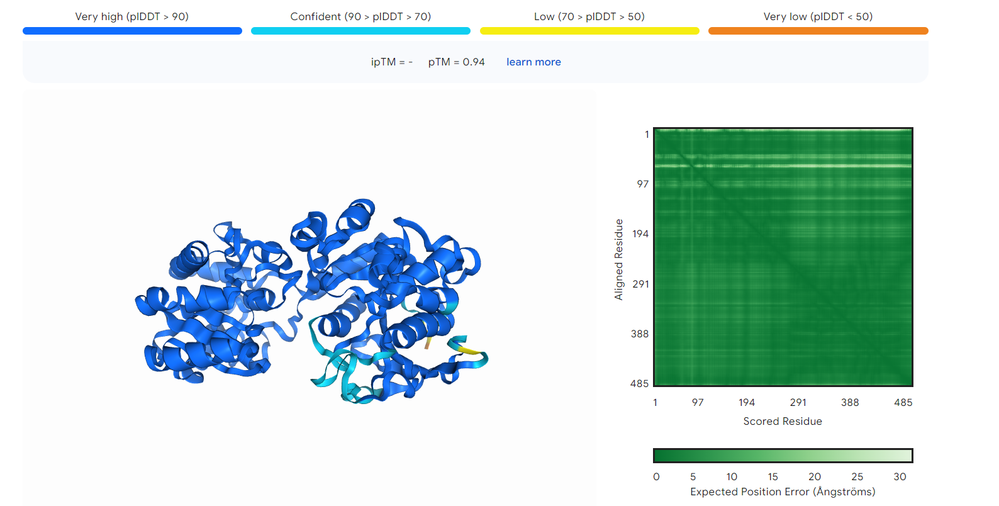
Opis poti: Strukturo sem zgenerirala s pomočjo Alphafold 3 in sicer s pomočjo aminokislinskega zaporedja, ki sem ga našla na blastx (GenBank ID: KUG27688.1)(slika X). Struktura naj bi bila zelo zanesljiva, saj je največji delež modela obravan temno modro (zelo zanesljivo), le nekateri deli zank so obarvani svetlo modro (zanesljivo) in res majhen delež rumeno (manj zanesljivo), oranžno obarvan (najslabša zanesljivost) pa je le čisti konec verige.
Slika: 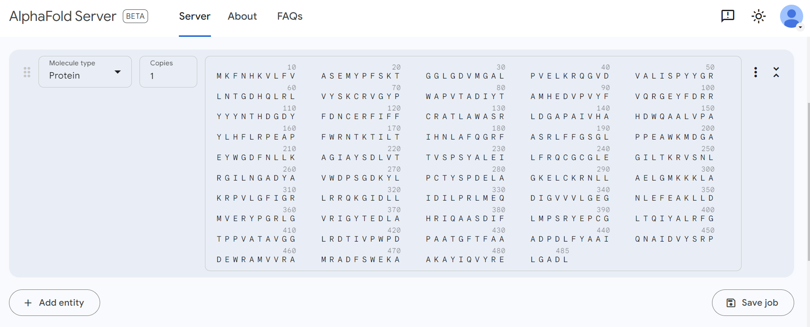